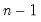
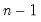

|
|
|
 and integer
and integer  , compute the population covariance () using the current and previous  observations of the series,
, compute the population covariance () using the current and previous  observations of the series,
 will be used.
will be used.